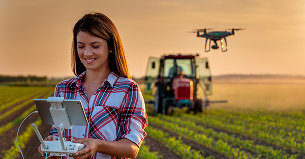

Cultivando o Amanhã com Inteligência e Sustentabilidade
Acelerando a transformação da agricultura brasileira através da integração entre tecnologia exponencial, eficiência produtiva e preservação ambiental ativa.
🌱 O Desafio Global: Produzir Mais com Menos Impacto
No cenário atual, a segurança alimentar é resultado de práticas integradas e de alto valor agregado. Conectamos eficiência operacional, sustentabilidade e tecnologia para gerar resultados consistentes e escaláveis.
🌿 Práticas ESG e Sustentabilidade
O agronegócio moderno exige governança ambiental e social com visão de longo prazo. Nossas iniciativas priorizam o manejo regenerativo para conservar recursos naturais e fortalecer a competitividade do produtor.
Manejo inteligente de recursos hídricos: irrigação de precisão com dados climáticos e análise de solo.
Logística de perdas reduzidas: monitoramento pós-colheita e controle de estoque que preservam a qualidade dos produtos.
🚜 Agricultura 4.0: Tecnologia e Inovação
Digitalizamos processos para transformar informação em decisão. A adoção de tecnologia de ponta aumenta a produtividade, reduz riscos e melhora a sustentabilidade financeira das operações.
Agricultura de precisão: aplicação de insumos em taxa variável com base em mapas de solo e sentimento de produtividade.
Drones e visão computacional: detecção antecipada de pragas, doenças e deficiência hídrica.
IA aplicada ao campo: modelos preditivos para otimizar calendário de plantio e colheita.
Biotecnologia responsável: sementes e insumos que aumentam a produtividade com menor impacto ambiental.
🤖 Automação Operacional de Alta Performance
Integrar robótica, IoT e análise de dados permite operações mais rápidas e menos sujeitas a falhas. Essa automação é essencial para escalar produção com eficiência e segurança.
Veículos autônomos conduzidos por GPS para plantio e colheita precisos.
Sistemas de pulverização direcionada que reduzem consumo de defensivos.
Rede de sensores IoT com monitoramento contínuo de solo e clima.
Gerenciamento inteligente de irrigação baseado em umidade real do solo.
Benefícios Estratégicos
Escalabilidade comprovada: mais hectares sob gestão com menos retrabalho.
📊 O Agro em Números: Força e Expressão
26,3%
Participação dos empregos nacionais criados pela cadeia agroindustrial
1/3
Fatia do PIB brasileiro gerada pelo agronegócio
7,6%
Área de lavouras com preservação de matas nativas por meio de práticas sustentáveis
💰 Motor Econômico e Desenvolvimento Social
O agronegócio é um pilar estratégico para a economia e para o desenvolvimento regional. Projetos bem executados geram emprego, infraestrutura e renda estável para comunidades rurais.
🌦️ Clima Inteligente e Gestão de Riscos
Com dados climáticos precisos e modelos de previsão, qualquer operação agrícola pode reduzir riscos, economizar recursos e antecipar decisões de plantio e colheita.
Análise de previsões climáticas: planejamento de operações mais seguros com base em temperatura, chuva e umidade.
Gestão de risco agronômico: estratégias adaptativas para minimizar perdas em eventos extremos.
Uso sustentável de água: irrigação inteligente alinhada ao clima e ao estado real do solo.
📈 Projetos que Vão Dar Certo
Em Agro Forte, apoiamos iniciativas com alto potencial de retorno e impacto social. Veja alguns projetos que têm chances reais de sucesso:
Fazenda Inteligente: integração de sensores, drones e software de gestão que aumentam a produtividade e reduzem custos de operação.
Plataforma de Gestão de Insumos: sistema digital para controle de estoque, planejamento de aplicações e conformidade ambiental.
Programa de Capacitação Digital: treinamento técnico para produtores, cooperativas e técnicos locais, acelerando a adoção de tecnologias sustentáveis.
🔍 Comparativo Antes e Depois
Veja como a transformação digital e a agricultura de precisão mudam resultados no campo.
Antes
Produção irregular com perda de insumos.
Uso manual de fertilizantes e irrigação.
Risco maior de falhas e desperdício.
Menor visibilidade sobre o clima e o solo.
Depois
Destino de insumos baseado em dados e mapas de solo.
Irrigação e pulverização automatizadas e eficientes.
Redução de custos, perdas e impacto ambiental.
Decisões mais rápidas com monitoramento em tempo real.
🌦️ Resiliência Frente às Mudanças Climáticas
Adotar uma agenda de baixo carbono não é apenas mais sustentável; é uma estratégia de vantagem competitiva. Técnicas como plantio direto e ILPF aumentam a resiliência das operações e reduzem custos de longo prazo.
📚 Educação, Capacitação Técnico-Científica e o Amanhã
Tecnologia só entrega valor se as equipes estiverem preparadas para usá-la. Investimos em capacitação para garantir que produtores e técnicos trilhem uma jornada de inovação contínua.
Programas de formação em escolas agrícolas e cooperativas transformam conhecimento em decisões mais assertivas e resultados econômicos mais sólidos.
📸 Inovação em Campo: O Agro Visual
Explore as tecnologias e métodos aplicados que estão revolucionando o dia a dia do produtor rural brasileiro.

Monitoramento Aéreo
Drones autônomos mapeando a saúde da lavoura em tempo real.
Maquinário Autônomo
Tratores guiados por GPS com precisão milimétrica de plantio.
Sensores IoT
Análise de umidade e nutrientes diretamente na raiz do solo.
.jpeg)
.jpeg)
.jpeg)